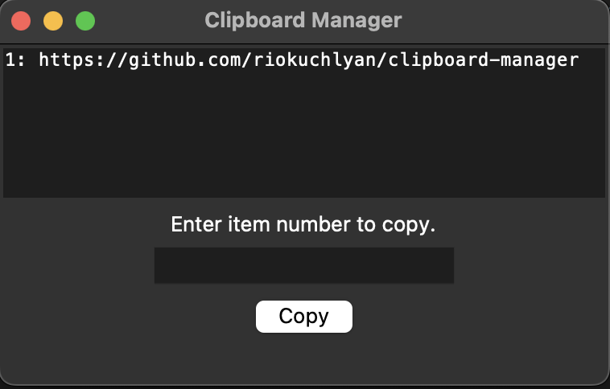
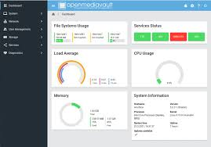

ABOUT ME
Hello! My name is Rio Kuchlyan and I am an aspiring developer who intends to work in the technology and banking industries. I am a student at the University of North Carolina at Chapel Hill pursuing a double major in computer science and business. Feel free to contact me through any of my socials in this page!


PROJECTS
Here are some of my projects:
I am currently working on a stock tracker which takes data for a given stock and runs sentiment analysis using Polygon and X APIs to predit whether or not the stock price will go up or down. This project is currently a work in progress and the source code can be viewed in this GitHub link:
GitHub Stock Tracker

Using Tkinter and the cryptography libraries in python, I created a password manager that works fully locally. It also encrypts the data to ensure that passwords are not stored in their raw format. Feel free to download the application installer and check out my code in this github link:
GitHub Password Manager

For my NAS server, I wanted to create a cloud storage solution within my home so that my family would have enough storage, with the convenience of accessing it remotely. At first, I used a Raspberry Pi micro-computer to test out how the NAS server would work alongside a small SD card for storage.
I created this clipboard manager as unlike windows, MacOs does not have a dedicated clipboard manager. This program, which works on all operating systems, reads and writes to the clipboard using the subprocess library. The graphical user interface is then created using Tkinter. The textbox at the bottom lets users select what text from their clipboard history to copy. The code for this project is available on my Github page.
GitHub Clipboard Manager
I had the idea to build this website as I was interested in various fields of computer science, whether it be building computers, software development, networking and more. Although these topics are all under computer science, they are vastly different and I wanted a way to represent all my interests in one common place. Through this website, I hope to inform others on the various aspects of computer science and also inspire others to build projects. Building this website was also a great learning experience, whether it be buying and managing domains, learning about DNS, and hosting the website.
GitHub riokuchlyan.com
Initially part of a school project, I decided to expand a simple battleship code into the full game. It is text based but provides visuals on where ships are located and more. This game was made using java and multiple methods and classes are used to create this game. To access the game, click on the Repl link below. Note: Repl is an external site to host code and the servers can be slow at times.
ReplIt Battleship
Web design is a crucial element of website building as it determines how users will interact with your website. This can be making your website more aesthetically pleasing or other aspects such as Search Engine Optimization (SEO), which will land your website higher up in search results in engines such as Google, generating more users. My web design portfolio below is a basic website with sub websites showcasing various elements of website building.
Web Design
These projects use multiple methods and classes to function such as JOptionPane, loops, static variables, and more. The house drawing uses JFrame and the java.awt library to develop shapes and a graphical interface to showcase the graphics. The graphics are not the most appealing, but it showcases how graphics can be used by coding, often thought of as command line only skills by beginners. Note: Repl is an external site to host code and the servers can be slow at times.
ReplIt Calculator
EXPERIENCE
Here are some of my academic experiences:
University of North Carolina at Chapel Hill
Freshman majoring in Computer Science and Business.
CARVR - AR/VR Development Team
Working on the development of a VR meditation app and a VR music band app.
Scholars of Finance - Leadership Development Program
Learning technical finance skills and leadership principles to develop strong ethical finance leaders.
iOS Bootcamp - App Team Carolina
Gaining hands-on experience with Swift, SwiftUI, and Xcode while building multiple mobile applications.
Educational Consulting - Hillsborough Township Board of Education
Represented 7,200 students and advised on funding allocations, including security improvements in schools.